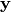
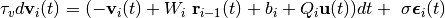

Networks¶
Contents
-
-
Implementation of an interface to be used for all network implementations
Implementation of a pytorch layer to be used within networks
Implementation of a simple network that is trained with backpropagation
Implementation of a network for Deep Feedback Control that uses a single phase
Script with helper functions for Deep Feedback Control computations
General Notes¶
Implementation of different types of networks. The common network structure is specified in networks.network_interface. This is an abstract method from which specific network types should inherit. It uses an abstract layer that is specified in networks.layer_interface.
For example, a backpropagation network inherits from these two abstract classes and uses networks.bp_networks.bp_layer within networks.bp_networks.bp_network.
Important functions for performing credit assignment, such as classes for performing non-linear operations within layers with a specific forward and backward pass, are specified in networks.credit_assignment_functions.
API¶
Implementation of an interface to be used for all network implementations¶
A simple network wrapper to be used as a blueprint for all other network classes.
-
class
networks.network_interface.NetworkInterface(n_in, n_hidden, n_out, activation='relu', bias=True, initialization='orthogonal', **kwargs)[source]¶ Bases:
torch.nn.modules.module.Module,abc.ABCImplementation of an interface for networks.
The last layer is always set to linear. For classification tasks, a softmax will be applied when computing the loss.
- Parameters
n_in (int) – Number of inputs.
n_hidden (list) – A list of integers, each number denoting the size of a hidden layer. If
None, there is no hidden layer.n_out (int) – Number of outputs.
activation (str) – The nonlinearity used in hidden layers. If
None, no nonlinearity will be applied.bias (bool) – Whether layers may have bias terms.
initialization (str) – The type of initialization to be applied.
Initializes internal Module state, shared by both nn.Module and ScriptModule.
-
property
activation¶ Getter for read-only attribute
activation.
-
backward(loss, targets=None)[source]¶ Compute the backward pass.
As this is simple backprop, no special computations are needed here, autograd does it all.
- Parameters
loss (float) – The loss.
targets (torch.Tensor) – The dataset targets. This will usually be ignored, but will become useful for DFC with strong feedback.
-
contains_nans(max_value=1000)[source]¶ Check whether the network parameters contain NaNs or large values.
-
forward(x)[source]¶ Compute the output
 of this network given the input
of this network given the input
 .
.- Parameters
x (torch.Tensor) – The input to the network.
- Returns
The output of the network.
-
abstract
forward_params()[source]¶ Access parameters.
- Returns
The list of forward parameters.
- Return type
params (list)
-
get_forward_parameter_list(with_bias=True)[source]¶ Get a list of forward parameters with or without biases.
Since forward_params might contain sublists, this transforms it into a flat list.
- Parameters
with_bias (boolean) – Whether to include biases.
- Returns
A flat list of parameters.
- Return type
(list)
-
get_vectorized_parameter_updates(with_bias=True)[source]¶ Get a vector with all the vectorized, concatenated parameter updates.
- Parameters
with_bias (bool) – Whether to include biases, if they exist.
- Returns
The vectorized form.
- Return type
-
property
initialization¶ Getter for read-only attribute
initialization.
-
property
layer_class¶ Define the layer type to be used.
Getter for read-only attribute
n_hidden.
-
property
name¶
-
abstract
params()[source]¶ Access parameters.
- Returns
- The list of parameters. It has length equal to the
number of layers. If a bias is being used, each element of the list is a two-length list with first weights and then biases. For DFC networks, it will also contain the feedback weights, and thus will have longer length.
- Return type
params (list)
Implementation of a pytorch layer to be used within networks¶
Layer module to be used within network classes.
-
class
networks.layer_interface.LayerInterface(in_features, out_features, last_layer_features=None, bias=True, requires_grad=False, forward_activation='tanh', initialization='orthogonal')[source]¶ Bases:
torch.nn.modules.module.Module,abc.ABCImplementation of an abstract layer.
- Parameters
in_features (int) – The number of pre-neurons.
out_features (int) – The number of post-neurons.
last_layer_features (int) – The number of neurons in the last layer. Only provided for direct feedback applications, else
None.bias (boolean) – Whether the layer has a bias or not.
requires_grad (boolean) – Whether the parameters require a gradient.
forward_activation (str) – The forward activation to be used.
initialization (str) – The initialization to be used.
Initializes internal Module state, shared by both nn.Module and ScriptModule.
-
property
activations¶ Getter for read-only attribute
activations
-
compute_bp_activation_updates(loss, retain_graph=False, linear=False)[source]¶ Compute the error backpropagation teaching signal for activations.
- Parameters
(...) – See docstring of method
compute_bp_update().linear (bool) – Flag indicating whether the update should be computed for the linear activations instead of the nonlinear activations.
- Returns
- A tensor containing the BP updates for the layer
activations for the current mini-batch.
- Return type
-
compute_bp_update(loss, retain_graph=False)[source]¶ Compute the error backpropagation update for the forward parameters of this layer, based on the given loss.
-
compute_nullspace_relative_norm(output_activation, retain_graph=False)[source]¶ Compute the norm of the components of the weight gradients that are in the nullspace of the jacobian of the output with respect to weights, relative to the norm of the weight gradients.
- Parameters
output_activation (torch.Tensor) – The outputs of the layer.
(...) – See docstring of method
compute_bp_update().
- Returns
The relative norm.
- Return type
-
compute_vectorized_jacobian(x)[source]¶ Compute the vectorized Jacobian of the forward activation function.
Compute vectorized Jacobian evaluated at the value x. The vectorized Jacobian is the vector with the diagonal elements of the real Jacobian as it is a diagonal matrix for element-wise functions. As x is a minibatch, the output will also be a mini-batch of vectorized Jacobia (thus a matrix).
- Parameters
x (torch.Tensor) – The linear activations for the current mini-batch.
- Returns
The Jacobian.
- Return type
-
forward(x)[source]¶ Compute the output of the layer.
This method applies first a linear mapping with the parameters
weightsandbias, after which it applies the forward activation function.- Parameters
x (torch.Tensor) – Mini-batch of size [B, in_features] with input activations from the previous layer or input.
- Returns
The mini-batch of output activations of the layer.
-
property
forward_activation¶ Getter for read-only attribute
forward_activation
-
forward_activation_function(x)[source]¶ Compute element-wise forward activation based on activation function.
- Parameters
x (torch.Tensor) – The input.
- Returns
The post-linearity activation.
- Return type
-
get_forward_gradients(with_bias=True)[source]¶ Return a list containing the gradients of the forward parameters.
- Parameters
with_bias (boolean) – Whether the bias should be returned.
- Returns
- A list with the gradients. It has length of one if only
weights are returned, and length two if biases are returned.
- Return type
(list)
-
get_forward_parameters(with_bias=True)[source]¶ Return a list containing the forward parameters.
In previous versions this was also called get_forward_parameter_list.
- Parameters
with_bias (boolean) – Whether the bias should be returned.
- Returns
- A list with the parameters. It has length of one if only
weights are returned, and length two if biases are returned.
- Return type
(list)
-
property
name¶
Implementation of a simple network that is trained with backpropagation¶
A simple network that is prepared to be trained with backprop.
-
class
networks.bp_network.BPLayer(*args, **kwargs)[source]¶ Bases:
networks.layer_interface.LayerInterfaceImplementation of a backpropagation layer.
- Parameters
(...) – See docstring of class
layer_interface.LayerInterface.
Initializes internal Module state, shared by both nn.Module and ScriptModule.
-
property
name¶
-
class
networks.bp_network.BPNetwork(*args, **kwargs)[source]¶ Bases:
networks.network_interface.NetworkInterfaceImplementation of a Multi-Layer Perceptron (MLP) trained with backprop.
This is a simple fully-connected network, that receives input vector and outputs a vector  of real values.
- Parameters
(...) – See docstring of class
network_interface.NetworkInterface.
Initializes internal Module state, shared by both nn.Module and ScriptModule.
-
property
forward_params¶ Access forward parameters.
- Returns
The list of parameters.
- Return type
params (list)
-
property
layer_class¶ Define the layer type to be used.
-
load_state_dict(state_dict)[source]¶ Load a state into the network.
This function sets the forward and backward weights.
- Parameters
state_dict (dict) – The state with forward and backward weights.
-
property
name¶
Implementation of a network for Direct Feedback Alingment¶
A network that is prepared to be trained with DFA.
-
class
networks.dfa_network.DFANetwork(*args, **kwargs)[source]¶ Bases:
networks.network_interface.NetworkInterfaceImplementation of a network for Direct Feedback Alignment.
- Parameters
(...) – See docstring of class
network_interface.NetworkInterface.
Initializes internal Module state, shared by both nn.Module and ScriptModule.
-
forward(x)[source]¶ Compute the output
of this network given the input
.- Parameters
x (torch.Tensor) – The input to the network.
- Returns
The output of the network.
-
property
forward_params¶ Access forward parameters.
- Returns
The list of parameters.
- Return type
params (list)
-
property
layer_class¶ Define the layer type to be used.
-
load_state_dict(state_dict)[source]¶ Load a state into the network.
This function sets the forward and backward weights.
- Parameters
state_dict (dict) – The state with forward and backward weights.
-
property
name¶
Implementation of a layer for Direct Feedback Alingment¶
A layer that is prepared to be trained with DFA.
-
class
networks.dfa_layer.DFALayer(in_features, out_features, last_layer_features, bias=True, requires_grad=False, forward_activation='tanh', initialization='orthogonal', initialization_fb=None)[source]¶ Bases:
networks.layer_interface.LayerInterfaceImplementation of a Direct Feedback Alignment layer.
- Parameters
Initializes internal Module state, shared by both nn.Module and ScriptModule.
-
forward(x, grad_out, is_last_layer=False)[source]¶ Compute the output of the layer.
This method applies first a linear mapping with the parameters
weightsandbias, after which it applies the forward activation function.- Parameters
x (torch.Tensor) – Mini-batch of size [B, in_features] with input activations from the previous layer or input.
grad_out (torch.Tensor) – A tensor that will reference the gradient of the output, such that it can then be overwritten during the gradient computation of the last layer, and used to be projected to earlier layers.
is_last_layer (boolean) – Whether this is the last layer.
- Returns
The mini-batch of output activations of the layer.
-
property
name¶
-
set_direct_feedback_layer(last_features, out_features)[source]¶ Create the network backward parameters.
This layer connects the output layer to a hidden layer. No biases are used in direct feedback layers. These backward parameters have no gradient as they are fixed.
- Parameters
(...) – See docstring of method
layer_interface.LayerInterface.set_layer().
-
property
weights_backward¶ Getter for read-only attribute
_weights_backward.
Implementation of a network for Deep Feedback Control¶
A network that is prepared to be trained with DFC.
-
class
networks.dfc_network.DFCNetwork(n_in, n_hidden, n_out, activation='relu', bias=True, initialization='xavier_normal', cont_updates=False, initialization_fb='weight_product', ndi=False, sigma=0.36, sigma_fb=0.01, sigma_output=0.36, sigma_output_fb=0.1, sigma_init=0.001, dt_di=0.02, dt_di_fb=0.001, alpha_di=0.001, alpha_di_fb=0.5, tmax_di=500, tmax_di_fb=10, k_p=2.0, k_p_fb=0.0, epsilon_di=0.3, time_constant_ratio=0.2, time_constant_ratio_fb=0.005, inst_transmission=False, inst_transmission_fb=False, apical_time_constant=-1, apical_time_constant_fb=None, inst_system_dynamics=False, inst_apical_dynamics=False, proactive_controller=False, noisy_dynamics=False, target_stepsize=0.01, tau_f=0.9, tau_noise=0.8, forward_requires_grad=False, include_non_converged_samples=True, compare_with_ndi=False, low_pass_filter_u=False, low_pass_filter_noise=False, use_jacobian_as_fb=False, save_ndi_updates=False, save_df=False, strong_feedback=False, compute_jacobian_at='full_trajectory', freeze_fb_weights=False, scaling_fb_updates=False, learning_rule='nonlinear_difference')[source]¶ Bases:
networks.network_interface.NetworkInterfaceImplementation of a network for Deep Feedback Control.
Note that forward and feedback weights are learned in two different phases that we call the wake and sleep phases, respectively.
It contains the following important functions:
forward: compute the forward pass across all layers.backward: compute the backward phase with controller on, and compute the gradients of the forward weights.compute_feedback_gradients: compute the gradients of feedback weights.controller: a proportional integral controller.
In this two-phase DFC setting, the following options exist for defining the target activations. For forward weight learning, the target outputs are either feedforward activations nudged towards lower loss (default) or set as the actual supervised targets (if the option
strong_feedbackis active). For feedback weight learning, the target outputs are either the feedforward activations (default) or the supervised targets (if the optionstrong_feedbackis active).- Parameters
(...) – See docstring of class
network_interface.NetworkInterface.initialization_fb (str) – The initialization for feedback weights.
ndi (boolean) – Whether to compute the non-dynamical inversion, i.e. the analytical solution at steady-state instead of simulating the dynamics.
cont_updates (boolean) – Whether the forward weights are updated at steady-state or not. Feedback weights are always computed continuously.
sigma – Std of Gaussian noise to corrupt activations during controller dynamics.
sigma_output – Same as sigma but for output layer.
sigma_fb – Same as “sigma” but for the sleep phase.
sigma_output_fb – Same as sigma_fb but for output layer.
sigma_init (float) – Std for assing Gaussian noise to feedback weight initialization for “weight_product” inits.
dt_di (float) – The timestep to be used in the differential equations.
dt_di_fb (float) – Same as “dt_di” but for the sleep phase.
alpha_di (float) – Leakage gain of the feedback controller.
alpha_di_fb (float) – Same as “alpha” but for the sleep phase.
tmax_di (float) – Maximum number of iterations (timesteps) performed in the dynamical inversion of targets.
tmax_di_fb (float) – Same as “tmax_di” but for the sleep phase.
epsilon_di (float) – Constant to check for convergence.
k_p (float) – The gain factor of the proportional control.
k_p_fb (float) – Same as “k_p” but for the sleep phase.
time_constant_ratio (float) – Ratio of the time constant of the voltage dynamics w.r.t. the controller dynamics.
time_constant_ratio_fb (float) – Same as “time_constant_ratio” but for the sleep phase.
inst_transmission (bool) – Whether to assume an instantaneous transmission between layers.
inst_transmission_fb (bool) – Same as “inst_transmission” but for the sleep phase.
apical_time_constant (float) – Time constant of the apical compartment.
apical_time_constant_fb (float) – Same as “apical_time_constant” but for the sleep phase.
inst_system_dynamics (bool) – Whether the dynamics of the somatic compartments, should be approximated by their instantaneous counterparts.
inst_apical_dynamics (bool) – Whether the dyamics of the apical compartiment should be instantneous.
proactive_controller (bool) – Whether to use the teaching signal of the next time step for simulating the controller dynamics.
noisy_dynamics (bool) – Whether dynamics should be corrupted with noise with std “sigma” or “sigma_fb”.
target_stepsize (float) – Step size for computing the output target based on the output gradient.
tau_f (float) – The time constant for filtering the dynamics and the control signal.
tau_noise (float) – The time constant to filter the noise.
forward_requires_grad (bool) – Whether the forward pass requires autograd to compute gradients.
include_non_converged_samples (bool) – Whether samples that have not converged should be excluded.
compare_with_ndi (bool) – Whether the dynamical inversion results should be compared to the analytical solution. Should only ever be active if ndi is False.
low_pass_filter_u (bool) – Whether the control signal should be low-pass filtered.
low_pass_filter_noise (bool) – Whether the noise should be low-pass filtered. Only relevant if noisy_dynamics==True.
use_jacobian_as_fb (bool) – Whether to use the Jacobian for the feedback weights.
save_ndi_updates (bool) – Whether angle with the analytical updates should be computed. Causes a minor increase in computational load.
save_df (bool) – Whether angles should be stored in a dataframe.
strong_feedback (bool) – Whether the feedback should be strong. In this case, the outputs are not simply nudged but clamped to the desired values. In this setting, the linearization becomes very inaccurate, so it does not make sense to use an analytical solution, so ndi should be False.
compute_jacobian_at (str) – How to compute the Jacobian.
scaling_fb_updates (bool) – Whether to scale the feedback updates differently for different layers.
learning_rule (str) – The type of learning rule to use for the forward weights.
Initializes internal Module state, shared by both nn.Module and ScriptModule.
-
property
alpha_di_fb¶ Getter for read-only attribute
alpha_di_fb.
-
property
apical_time_constant¶ Getter for read-only attribute
apical_time_constant
-
property
apical_time_constant_fb¶ Getter for read-only attribute
apical_time_constant_fb
-
backward(loss, targets=None, return_for_fb=False, verbose=True)[source]¶ Run the feedback phase of the network.
In this phase, the network is pushed to the output target by the controller. Compute the update of the forward weights of the network accordingly and save it in
self.layers[i].weights.gradfor each layeri.Note:
backwardis implemented at the network-level, as it performs simultaneous inversion and control of all targets- Parameters
loss (torch.Tensor) – Mean output loss for current mini-batch.
targets (torch.Tensor) – The dataset targets. This will usually be ignored, as the targets will be taken to be the activations nudged towards lower loss, unless we use strong feedback.
return_for_fb (boolean) – Whether to return the control signal and the aplical voltages. This is useful when implementing DFC in a single phase, as these values will be needed to compute the feedback gradients.
verbose (bool) – Whether to display warnings.
- Returns
(Optionally) the controller signal.
- Return type
-
check_convergence(r, r_feedforward, output_target, u, sample_error, batch_size)[source]¶ Check whether the dynamics of the network have converged.
This function computes whether individual samples have converged to a small output error. Like this, the ones that have not converged can be exclulded from the mini-batch update.
- Parameters
r (torch.Tensor) – The target activations across layers.
r_feedforward (torch.Tensor) – The forward activations across layers.
output_target (torch.Tensor) – The output target.
u (torch.Tensor) – The control signal.
sample_error (torch.Tensor) – The L2 norm of the error at each timestep, computed by the controller.
batch_size (int) – The batch-size.
- Returns
Tuple containing:
converged: List indicating if individual samples converged.
diverged: List indicating if individual samples diverged.
- Return type
(…)
-
compute_H_update(loss, u)[source]¶ Compute the negative weight updates from the loss.
This computes the gradients w.r.t. the post-nonlinearity activations using the full Jacobian of the network:
- Parameters
(...) – See docstring of method
compute_bp_update().u (torch.Tensor) – The controller signal.
- Returns
Tuple containing:
lu_updates_W (list): The weight updates for each layer according to loss .
lu_updates_b (list): The bias updates for each layer according to loss .
Noneif no biases exist.
- Return type
(…)
-
compute_bp_angles(loss, i, retain_graph=False)[source]¶ Compute the angles of the current forward parameter updates of layer i with the backprop update for those parameters.
- Parameters
loss (float) – Output loss of the network.
i (int) – Layer index.
retain_graph (bool) – flag indicating whether the graph of the network should be retained after computing the gradients or jacobians. If the graph will not be used anymore for the current minibatch afterwards, retain_graph should be False.
- Returns
Tuple containing:
weights_angle: The angle in degrees between the updates for the forward weights.
bias_angle: (Optionally) the angle in degrees for the bias.
- Return type
(…)
-
compute_condition_two()[source]¶ Compute the Gauss-Newton condition on the feedback weights.
to keep track whether condition 2 is (approximately) satisfied. If the minibatch size is bigger than 1, the mean over the minibatch is returned.
- Returns
The condition value.
-
compute_error(output_target, r)[source]¶ Compute the error in the predictions.
By default this error is computed as in the DFC paper according to:
For a mean-squared error (MSE) loss , this can be seen as the gradient of the loss with respect to the output activations . This notion can be generalized to other losses, and we can instead write the error as:
In this function we hard-code the solution of this equation for the MSE loss mentioned above as well as for the cross-entropy loss. Which one of these is used will be determined by the attribute
loss_function_name, which by default is the MSE loss.So for cross-entropy loss, we return the following error:
- Parameters
output_target (torch.Tensor) – The desired output .
r (torch.Tensor) – The current output .
- Returns
The error .
- Return type
-
compute_feedback_gradients(loss, targets, init=False)[source]¶ Compute the gradients of the feedback weights for each layer.
The updates are computed according to the following update rule:
where the output target is equal to the feedforward output of the network (i.e. without feedback) and where noise is applied to the network dynamics. Hence, the controller will try to ‘counter’ the noisy dynamics, such that the output is equal to the unnoisy output.
The scaling
 is either 1 or, if the option
is either 1 or, if the option
scaling_fb_updatesis active, .No inputs are required to this function since all activations are expected to be saved within the object.
- Parameters
loss (float) – The loss.
targets (torch.Tensor) – The dataset targets. This will usually be ignored, as the targets will be taken to be the activations nudged towards lower loss, unless we use strong feedback.
init (boolean) – Indicates that this is a pre-train of the weights.
-
compute_full_jacobian(linear=True, noisy_dynamics=False)[source]¶ Compute the Jacobian of the network output.
Compute the Jacobian of the network output (post-nonlinearity) with respect to either the concatenated pre-nonlinearity activations of all layers (including the output layer!) (i.e.
self.layers[i].linear_activations) iflinear=Trueor the concatenated post-nonlinearity activations of all layers iflinear=False(i.e.self.layers[i].activations).If there is noise being used in the dynamics, then a low-passed version of the activations will be used to compute the Jacobian.
Note that this implementation does not use autograd.
- Parameters
- Returns
- A
dimensional tensor, with
 the minibatch size and
the dimension of layer ,
containing the Jacobian of the network output w.r.t. the
concatenated activations (pre or post-nonlinearity) of all
layers, for each minibatch sample.
the minibatch size and
the dimension of layer ,
containing the Jacobian of the network output w.r.t. the
concatenated activations (pre or post-nonlinearity) of all
layers, for each minibatch sample.
- Return type
-
property
compute_jacobian_at¶ Getter for read-only attribute
compute_jacobian_at
-
compute_loss(output_target, r, axis=1)[source]¶ Compute the loss in the predictions.
This function is mostly used to check for convergence. By default this error is computed as in the DFC paper for each sample according to:

However, if
loss_function_name==cross_entropywe compute the following:- Parameters
output_target (torch.Tensor) – The desired output .
r (torch.Tensor) – The current output .
axis (int) – The axis across which to compute the norm.
- Returns
The list of loss values in the mini-batch.
- Return type
-
compute_output_target(loss, targets=None)[source]¶ Compute the output target.
The target can be computed in one of two ways:
Nudged activations towards lower loss:
As the actual targets (if
strong_feedback==True)
We assume the loss is averaged across the mini-batch, so here we need to multiply by the batch size to use the total loss over the mini-batch.
- Parameters
loss (torch.Tensor) – Mean output loss for current mini-batch.
targets (torch.Tensor) – The dataset targets. This will usually be ignored, as the targets will be taken to be the activations nudged towards lower loss, unless we use strong feedback.
- Returns
Mini-batch of output targets
- Return type
-
compute_ratio_ff_fb(loss, u)[source]¶ Compute the ratio of the current feedforward and feedback stimulus.
It is computed as:
- Parameters
loss (torch.Tensor) – Output loss of the network.
u (torch.Tensor) – Controller signal.
- Returns
A list with the ratios for each layer.
- Return type
(list)
-
property
cont_updates¶ Getter for read-only attribute
cont_updates
-
controller(output_target, alpha, dt, tmax, k_p=0.0, noisy_dynamics=False, inst_transmission=False, time_constant_ratio=1.0, apical_time_constant=-1, proactive_controller=False, sigma=0.01, sigma_output=0.01)[source]¶ Simulate the feedback control loop for several timesteps.
The following continuous time ODEs are simulated with time interval
dt. The following equation is used for the voltage:And the following for the control signal:
Note that we use a ratio instead of two separate time constants for
 and
and  ,
as a scaling of both time constants can be absorbed in the simulation
timestep
,
as a scaling of both time constants can be absorbed in the simulation
timestep dt. IMPORTANT:time_constant_ratioshould never be taken smaller thandt, as then the forward Euler method will become unstable by default (the simulation steps will start to ‘overshoot’).If
inst_transmission=False, the forward Euler method is used to simulate the differential equation. Ifinst_transmission=True, a slight modification is made to the forward Euler method, assuming that we have instant transmission from one layer to the next: the basal voltage of layeriat timesteptwill already be based on the forward propagation of the somatic voltage of layeri-1at timestept, hence including the feedback of layeri-1at timestept. It is recommended to putinst_transmission=Truewhen thetime_constant_ratiois approachingdt, as then we are approaching the limit of instantaneous system dynamics in the simulation whereinst_transmissionis always used (See below).If
inst_system_dynamics=True, we assume that the time constant of the system (i.e. the network) is much smaller than that of the controller and we approximate this by replacing the dynamical equations for by their instantaneous equivalents:Note that
inst_transmissionwill always be put onTrue(overridden) in combination withinst_system_dynamics.If
proactive_controller=True, the control inputu[k+1]will be used to compute the apical voltagesv^\text{fb}[k+1], instead of the control inputu[k]. This is a slight variation on the forward Euler method and corresponds to the conventional discretized control schemes.If
noisy_dynamics=True, noise is added to the apical compartment of the neurons. We now simulate the apical compartment with its own dynamics, as the feedback learning rule needs access to the noisy apical compartment. We use the following stochastic differential equation for the apical compartment:with the Wiener process (Brownian motion) with covariance matrix
 .
.This is simulated with the Euler-Maruyama method:
with drawn from the zero-mean Gaussian distribution with covariance
. The other dynamical equations in the system
remain the same, except that is replaced by
:One can opt for instantaneous apical compartment dynamics by putting its time constant (
apical_time_constant) equal todt. This is not encouraged for training the feedback weights, but can be used for simulating noisy system dynamics for training the forward weights, resulting in:
which can again be similarly discretized with the Euler-Maruyama method.
Note that for training the feedback weights, it is recommended to put
inst_transmission=True, such that the noise of all layers can influence the output at the current timestep, instead of having to wait for a couple of timesteps, depending on the layer depth.Note that in the current implementation, we interpret that the noise is added in the apical compartment, and that the basal and somatic compartments are not noisy. At some point we might want to also add noise in the somatic and basal compartments for physical realism.
- Parameters
output_target (torch.Tensor) – The output target that is used by the controller to compute the control error .
alpha (float) – The leakage term of the controller.
dt (float) – The time interval used in the forward Euler method.
tmax (int) – The maximum number of timesteps.
k_p (float) – The positive gain parameter for the proportional part of the controller. If it is equal to zero (by default), no proportional control will be used, only integral control.
noisy_dynamics (bool) – Flag indicating whether noise should be added to the dynamics.
inst_transmission (bool) – Flag indicating whether the modified version of the forward Euler method should be used, where it is assumed that there is instant transmission between layers (but not necessarily instant voltage dynamics). See the docstring above for more information.
time_constant_ratio (float) – Ratio of the time constant of the voltage dynamics w.r.t. the controller dynamics.
apical_time_constant (float) – Time constant of the apical compartment. If
-1, we assume that the user does not want to model the apical compartment dynamics, but assumes instant transmission to the somatic compartment instead (i.e. apical time constant of zero).
- Returns
Tuple containing:
- r (list): A list with at index
iatorch.Tensor of dimension containing the firing rates of layer
ifor each timestep.
- r (list): A list with at index
- u (torch.Tensor): A tensor of dimension
containing the control input for each timestep.
- (v_fb, v_ff, v) (tuple): A tuple with 3 elements, each
containing a list with at index
iatorch.Tensorof dimension containing the voltage levels of the apical, basal or somatic compartments respectively.
- sample_error (torch.Tensor): A tensor of dimension
containing the L2 norm of the error at each timestep.
- Return type
(…)
-
dynamical_inversion(output_target, verbose=True)[source]¶ Compute the dynamical (simulated) inversion of the targets.
It does the inversion in real time, controlling all hidden layers simultaneously.
This function calls
self.controller()as a subroutine, which returns values for,  ,
, and
for every simulated time step. The last values of these arrays are taken
to represent the steady state. However, convergence is not guaranteed.
If
,
, and
for every simulated time step. The last values of these arrays are taken
to represent the steady state. However, convergence is not guaranteed.
If self.include_non_converged_samplesis set toFalse, the values of batch elements that did not converge are set to their feedforward mode values, which includes and
being set to 0.
If self.include_non_converged_samplesis set toTrue, some of the returned values with_sssuffix may in fact not represent the steady state.- Parameters
output_target (torch.Tensor) – The output targets.
verbose (bool) – Whether to display warnings.
- Returns
An ordered tuple containing:
u_ss (torch.Tensor):
, the final control
input.v_ss (list): The final voltage activations of the somatic compartments, split in a list that contains for each layer.
r_ss (list): . The final firing rates of the neurons, split in a list that contains for each layer.
r_out_ss (torch.Tensor): The finaloutput activation of the network.
delta_v_ss (list): A list containing the final for each layer.
(u, v_fb, v, v_ff, r) (tuple): A tuple with 5 elements.
represents a tensor of dimension
containing the control
input for each timestep.
, ,
each contain a list with at
index iatorch.Tensorof dimension . is a list with at indexiatorch.Tensorof dimension containing the firing rates of layerifor each timestep.
- Return type
(…)
-
property
epsilon_di¶ Getter for read-only attribute
epsilon_di.
-
property
feedback_params¶ Access feedback parameters.
- Returns
The list of feedback parameters.
- Return type
params (list)
-
forward(x)[source]¶ Compute the output
of this network given the input
.- Parameters
x (torch.Tensor) – The input to the network.
- Returns
The output of the network.
-
property
forward_params¶ Access forward parameters.
- Returns
The list of forward parameters.
- Return type
params (list)
-
property
forward_params_grad¶ Return a structure identical to forward params but with gradients.
- Returns
The gradients.
- Return type
(list)
-
property
forward_requires_grad¶ Getter for read-only attribute forward_requires_grad
-
property
freeze_fb_weights¶ Getter for read-only attribute
freeze_fb_weights
-
property
full_Q¶ Getter for matrix containing the concatenated feedback weights.
-
property
include_non_converged_samples¶ Getter for read-only attribute
include_non_converged_samples
-
init_feedback_layers_weight_product()[source]¶ Initialize the feedback weights to the inversion matrices.
The feedback weights will be initializaed to the product of the forward weights (transposed) of subsequent layers. Note that this function can’t be called at the level of inidividual layers since it needs information about the entire network.
-
property
initialization_fb¶ Getter for read-only attribute
initialization_fb.
-
property
input¶ Getter for attribute input.
-
property
inst_apical_dynamics¶ Getter for read-only attribute
inst_apical_dynamics
-
property
inst_system_dynamics¶ Getter for read-only attribute
inst_system_dynamics
-
property
inst_transmission¶ Getter for read-only attribute
inst_transmission
-
property
inst_transmission_fb¶ Getter for read-only attribute
inst_transmission_fb
-
property
layer_class¶ Define the layer type to be used.
-
property
learning_rule¶ Getter for read-only attribute
learning_rule
-
load_state_dict(state_dict)[source]¶ Load a state into the network.
This function sets the forward and backward weights.
- Parameters
state_dict (dict) – The state with forward and backward weights.
-
property
loss_function_name¶ Getter for read-only attribute
loss_function_name
-
property
low_pass_filter_noise¶ Getter for read-only attribute
_low_pass_filter_noise
-
property
low_pass_filter_u¶ Getter for read-only attribute
low_pass_filter_u
-
property
name¶
-
property
noisy_dynamics¶ Getter for read-only attribute
noisy_dynamics
-
non_dynamical_inversion(output_target, retain_graph=False)[source]¶ Compute the analytical solution for the network activations in the feedback phase, when the controller pushes the network to reach the output target. The following formulas are used:
with the control input at steady-state, the apical compartment voltage at steady-state, the difference between the output target and the output of the network at the feedforward sweep (without feedback). For the other symbols, refer to the paper.
- Parameters
output_target (torch.Tensor) – The output target of the network.
retain_graph (bool) – Flag indicating whether the autograd graph should be retained for later use.
- Returns
An ordered tuple containing:
u_ndi (torch.Tensor): , steady state control input.
v_ndi (list): The steady-state voltage activations of the somatic compartments, split in a list that contains for each layer.
r_ndi (list): . The steady-state firing rates of the neurons, split in a list that contains for each layer.
r_out_ndi (torch.Tensor): The steady state output activation of the network.
delta_v_ndi_split (list): A list containing for each layer.
- Return type
(…)
-
property
params¶ Access all parameters.
- Returns
The list of all parameters.
- Return type
params (list)
-
property
proactive_controller¶ Getter for read-only attribute
proactive_controller
-
property
r¶ Getter for attribute targets.
-
save_H_angles(writer, step, loss, save_tensorboard=True, save_dataframe=True)[source]¶ Save the angles of the current forward parameter updates with the update driven from the Lu loss for those parameters
Save the angle in the tensorboard writer (if
save_tensorboard=True) and in the corresponding dataframe (ifsave_dataframe=True).- Parameters
(...) – See docstring of method
save_ndi_angles()
-
save_bp_angles(writer, step, loss, retain_graph=False, save_tensorboard=True, save_dataframe=True)[source]¶ Save the angles of the current forward parameter updates with the backprop update.
Save the angle in the tensorboard writer (if
save_tensorboard=True) and in the corresponding dataframe (ifsave_dataframe=True).- Parameters
(...) – See docstring of method
save_ndi_angles().loss (torch.Tensor) – Output loss of the network.
retain_graph (bool) – Flag indicating whether the graph of the network should be retained after computing the gradients or Jacobians. If the graph will not be used anymore for the current minibatch afterwards, retain_graph should be False.
-
save_feedback_batch_logs(config, writer, step, init=False, save_tensorboard=True, save_dataframe=True, save_statistics=False)[source]¶ Save the logs for the current minibatch on tensorboardX.
Args:
Save the angle in the tensorboard writer (if
save_tensorboard=True) and in the corresponding dataframe (ifsave_dataframe=True).- Parameters
(...) – See docstring of method
save_ndi_angles()init (bool) – Flag indicating that the training is in the initialization phase (only training the feedback weights).
save_statistics – Flag indicating whether the statistics of the feedback weights should be saved (e.g. gradient norms).
-
save_logs(writer, step, log_weights='both', prefix='')[source]¶ Log the norm of the weights and the gradients.
-
save_ndi_angles(writer, step, save_dataframe=True, save_tensorboard=True)[source]¶ Save angle between dynamical and analytical inversion results.
The analytical results have been stored during training in self.layers[i].ndi_update_weights.
Save the angle in the tensorboard writer (if
save_tensorboard=True) and in the corresponding dataframe (ifsave_dataframe=True).- Parameters
-
save_ratio_ff_fb(writer, step, loss, save_tensorboard=True, save_dataframe=True)[source]¶ Save the ratio of the current feedforward and feedback stimulus.
Save the angle in the tensorboard writer (if
save_tensorboard=True) and in the corresponding dataframe (ifsave_dataframe=True).- Parameters
(...) – See docstring of method
save_ndi_angles()
-
property
scaling_fb_updates¶ Getter for read-only attribute
scaling_fb_updates
-
set_grads_to_bp(loss, retain_graph=False)[source]¶ Set the gradients to correspond to those obtained with backprop.
This function replaces the
gradattributes of the forward weights.- Parameters
loss (float) – The current loss.
retain_graph (boolean) – Whether autograd graph should be retained.
-
property
sigma_init¶ Getter for read-only attribute
_sigma_init.
-
property
sigma_output¶ Getter for read-only attribute
sigma_output.
-
property
sigma_output_fb¶ Getter for read-only attribute
sigma_output_fb.
-
property
state_dict¶ A dictionary containing the current state of the network, incliding forward and backward weights.
- Returns
The forward and feedback weights.
- Return type
(dict)
-
property
strong_feedback¶ Getter for read-only attribute
strong_feedback
-
property
target_stepsize¶ Getter for read-only attribute
target_stepsize
-
property
time_constant_ratio¶ Getter for read-only attribute
time_constant_ratio
-
property
time_constant_ratio_fb¶ Getter for read-only attribute
time_constant_ratio_fb
-
property
tmax_di_fb¶ Getter for read-only attribute
tmax_di_fb.
-
unflatten_params(params, params_type='forward_params')[source]¶ Unflatten the parameters.
This function assumes a certain structure in the parameters to unflatten a list into the same structure as self.forward_params or self.feedback_params.
-
property
use_jacobian_as_fb¶ Getter for read-only attribute
use_jacobian_as_fb
Implementation of a layer for Deep Feedback Control¶
A layer that is prepared to be trained with DFC.
-
class
networks.dfc_layer.DFCLayer(in_features, out_features, last_layer_features, bias=True, requires_grad=False, forward_activation='tanh', initialization='orthogonal', initialization_fb='weight_product')[source]¶ Bases:
networks.layer_interface.LayerInterfaceImplementation of a Deep Feedback Control layer.
It contains the following important functions:
forward: which computes the linear activation based on the previous layer as well as the post non-linearity activation. It stores these in the attributes “_linear_activations” and “_activa.tions”.
compute_forward_gradients: computes the forward parameter updates and stores them under “grad”, by using the pre-synaptic activations and the controller feedback. The ule is based on a voltage difference rule.
compute_forward_gradients_continuous: same as “compute_forward_gradients” but it performs an integration over time.
compute_feedback_gradients: compute the feedback gradients.
compute_feedback_gradients_continuous: same as “compute_feedback_gradients” but it performs an integration over time.
- Parameters
(...) – See docstring of class
layer_interface.LayerInterface.last_layer_features (int) – The size of the output layer.
Initializes internal Module state, shared by both nn.Module and ScriptModule.
-
property
activations¶ Getter for read-only attribute
activations
-
compute_feedback_gradients_continuous(v_fb_time, u_time, t_start=None, t_end=None, sigma=1.0, beta=0.0, scaling=1.0)[source]¶ Computes feedback gradients using an integration (sum) of voltage.
This weight update is identical to
compute_feedback_gradients()except that it allows to integrate over more than one timestep.It follows the differential equation:
Refer to
compute_feedback_gradients()for variable details.Note that pytorch saves the positive gradient, hence we should save .
- Parameters
v_fb_time (torch.Tensor) – The apical compartment voltages over a certain time period.
u_time (torch.Tensor) – The control inputs over certain time period.
t_start (torch.Tensor) – The start index from which the summation over time should start.
t_end (torch.Tensor) – The stop index at which the summation over time should stop.
sigma (float) – The standard deviation of the noise in the network dynamics. This is used to scale the fb weight update, such that its magnitude is independent of the noise variance.
beta (float) – The homeostatic weight decay parameter.
scaling (float) – In the theory for the feedback weight updates, the update for each layer should be scaled with , with L the amount of layers and i the layer index.
scalingshould be the factor for this layer.
-
compute_forward_gradients(delta_v, r_previous, scale=1.0, saving_ndi_updates=False, learning_rule='nonlinear_difference')[source]¶ Computes forward gradients using a local-in-time learning rule.
This function applies a non-linear difference learning rule as described in Eq. (5) in the paper. Specifically, it compues the difference between the non-linear transformation of basal and somatic voltages.
Depending on the option
saving_ndi_updatesthese updates will be stored in different locations (see argument docstring).- Parameters
delta_v – The feedback teaching signal from the controller.
r_previous (torch.Tensor) – The activations of the previous layer.
scale (float) – Scaling factor for the gradients.
saving_ndi_updates (boolean) – Whether to save the non-dynamical inversion updates. When
True, computed updates are added tondi_updates_weights(and bias) to later compare with the steady-state/continuous updates. WhenFalse, computed updates are added toweights.grad(and bias), to be later updated.learning_rule (str) – The type of learning rule.
-
compute_forward_gradients_continuous(v_time, v_ff_time, r_previous_time, t_start=None, t_end=None, learning_rule='nonlinear_difference')[source]¶ Computes forward gradients using an integration (sum) of voltage differences across comparments.
This weight update is identical to
compute_forward_gradientsexcept that it allows to integrate over more than one timestep. However, here the somatic and basal voltages are assumed to have been computed outside and provided as an input argument.- Parameters
v_time – The somatic voltages at different timesteps.
v_ff_time – The basal voltages at different timesteps.
r_previous_time – The activations of the previous layer at different timesteps.
t_start (int) – The initial time index for the integration.
t_end (int) – The final time index for the integration.
learning_rule (str) – The type of learning rule.
-
forward(x)[source]¶ Compute the output of the layer.
This method applies first a linear mapping with the parameters
weightsandbias, after which it applies the forward activation function.In the forward pass there is no noise, and thus the normal activations and the low-pass filtered activations are identical.
- Parameters
x (torch.Tensor) – Mini-batch of size [B, in_features] with input activations from the previous layer or input.
- Returns
The mini-batch of output activations of the layer.
-
property
linear_activations¶ Getter for read-only attribute
linear_activations
-
property
name¶
-
save_feedback_batch_logs(writer, step, name, no_gradient=False, pretraining=False)[source]¶ Save feedback weight stats for the latest mini-batch.
- Parameters
writer (SummaryWriter) – Summary writer from tensorboardX.
step (int) – The global step used for the x-axis of the plots.
name (str) – The name of the layer.
no_gradient (bool) – Flag indicating whether we should skip saving the gradients of the feedback weights.
pretraining (bool) – Flag indicating that the training is in the initialization phase (only training the feedback weights).
-
set_direct_feedback_layer(last_features, out_features)[source]¶ Create the network backward parameters.
This layer connects the output layer to a hidden layer. No biases are used in direct feedback layers. These backward parameters have no gradient as they are fixed.
Note that as opposed to DFA, here the backwards weights are not Parameters.
- Parameters
(...) – See docstring of method
layer_interface.LayerInterface.set_layer().
-
property
weights_backward¶ Getter for read-only attribute
_weights_backward.
Implementation of a network for Deep Feedback Control that uses a single phase¶
A network that is prepared to be trained with DFC but using a single phase for training both the forward and the feedback weights.
-
class
networks.dfc_network_single_phase.DFCNetworkSinglePhase(*args, pretrain_without_controller=False, **kwargs)[source]¶ Bases:
networks.dfc_network.DFCNetworkImplementation of a network for Deep Feedback Control with single phase.
Network that always udpates the feedfoward and feedback weights simultaneously in one single phase.
In this single-phase DFC setting, the following options exist for defining the target activations. For forward weight learning, the target outputs are either feedforward activations nudged towards lower loss (default) or set as the actual supervised targets (if the option strong_feedback is active), just like in two-phase DFC. For feedback weight learning, the target outputs are either nudged or set to the supervised targets (if strong_feedback is active). However, in the pre-training stage, if the option pretrain_without_controller is active, the targets are set to the forward activations.
- Parameters
(...) – See docstring of class
dfc_network.DFCNetwork.pretrain_without_controller (bool) – Whether pretraining should be done without the controller being on.
Initializes internal Module state, shared by both nn.Module and ScriptModule.
-
backward(loss, targets=None, verbose=True)[source]¶ Run the feedback phase of the network.
Here, the network is pushed to the output target by the controller and used to compute update of the forward and backward weights.
This function simply constitutes a wrapper around the base backward function, where forward updates are computed, and just adds the feedback weight update.
- Parameters
loss (torch.Tensor) – Mean output loss for current mini-batch.
targets (torch.Tensor) – The dataset targets. This will usually be ignored, as the targets will be taken to be the activations nudged towards lower loss, unless we use strong feedback.
verbose (bool) – Whether to display warnings.
-
compute_feedback_gradients(loss, targets, u_time=None, v_fb_time=None, init=False)[source]¶ Compute the gradients of the feedback weights for each layer.
This function is called in two different situations:
1. During pre-training of the feedback weights, there has not yet been a simulation, so this function calls a simulation (with special values for
 and to ensure stability during pre-training) and
uses the results of the simulation to update the feedback weights.
In this case, the inputs and
will be
and to ensure stability during pre-training) and
uses the results of the simulation to update the feedback weights.
In this case, the inputs and
will be None.2. During the simultaneous training of feedforward and feedback weights, the backward method already simulates the dynamics, and the results are passed through
and
. In this case, we directly use these
simulation results to compute the updates without running a new
simulation.The feedback weight updates are computed according to the following rule:
- Parameters
(...) – See docstring of method
backward().u_time (torch.Tensor) – A torch.Tensor of dimension containing the high-pass filtered controller inputs. If None (by default), a new simulation will be run to calculate v_fb_time and u_time.
v_fb_time (torch.Tensor) – A list with at index
ia torch.Tensor of dimension containing the voltage levels of the apical (feedback) compartment of layer i. IfNone(by default), a new simulation will be run to calculate and
.init (bool) – Whether this is a pre-training stage. If
True, dynamics values specific for the feedback path will be used. Else, the same as the forward pass will be used.
-
dynamical_inversion(*args, **kwargs)[source]¶ Compute the dynamical (simulated) inversion of the targets.
Applies the same function as in the base DFC class, but adds a low-pass filter to the target activations.
- Parameters
output_target (torch.Tensor) – The output targets.
-
property
pretrain_without_controller¶ Getter for read-only attribute
pretrain_without_controller
Adding custom functions to PyTorch’s autograd¶
The module lib.backprop_functions contains custom implementations of
neural network components (layers, activation functions, loss functions, …),
that are compatible with PyTorch its autograd package.
A new functionality can be added to autograd by creating a subclass of class
torch.autograd.Function. In particular, we have to implement the
torch.autograd.Function.forward() method (which computes the output of a
differentiable function) and the torch.autograd.Function.backward()
method (which computes the partial derivatives of the output of the implemented
torch.autograd.Function.forward() method with respect to all input tensors
that are flagged to require gradients).
-
class
networks.credit_assignment_functions.DFANonlinearFunction[source]¶ Bases:
torch.autograd.function.FunctionImplementation of a fully-connected layer with activation function.
This class is very similar to
NonlinearFunctionbut it provides layers to be used with Direct Feedback Alignment, i.e. it projects gradients of the last layer directly to all upstream layers, while keeping the forward pass unchanged.-
static
backward(ctx, grad_Z)[source]¶ Directly project the output gradients to this layer.
The matrix
grad_Z, which we denote by , contains the partial derivatives of the scalar loss function with respect to each element from theforward()output matrix . It is ignored for all layers, except for the last layer.For the linear component, the partial derivatives of the weights can be computed as follows:
Where
is the feedback matrix that allows projecting from the
output layer, and is the gradient of the loss in
the last layer.These need to be multiplied by the derivative of the post-nonlinearity with respect to its input.
- Parameters
ctx – See description of argument
ctxof methodforward().grad_Z – The backpropagated error .
- Returns
See docstring of method
NonlinearFunction.backward().- Return type
(…)
-
static
forward(ctx, A, W, B, grad_out, nonlinearity, is_last_layer, b=None)[source]¶ Compute the output of a non-linear layer.
Same as in NonlinearFunction.forward except that here we also store in the context the direct feedback matrix.
- Parameters
(...) – See docstring of method
NonlinearFunction.forward().B (torch.Tensor) – The feedback connection matrices.
grad_out (torch.Tensor) – The gradient of the loss with respect to the last layer activation. Required to be directly projected to all upstream layers.
is_last_layer (boolean) – Whether this is the last layer of the net.
- Returns
See docstring of method
NonlinearFunction.forward().- Return type
(…)
-
static
-
class
networks.credit_assignment_functions.NonlinearFunction[source]¶ Bases:
torch.autograd.function.FunctionImplementation of a fully-connected layer with activation function.
This class is a
Functionthat behaves similar to PyTorch’s classtorch.nn.Linear, but it has a different backward function that includes the non-linearity already. Sincethis class implements the interfacetorch.autograd.Function, we can use it to specify a custom backpropagation behavior.Assuming column vectors: layer input , bias vector and a weight matrix , this layer simply computes
(1)¶
(or if is
None), where is the nonlinearity..
is the nonlinearity..The mathematical operation described for single samples in eq. (1), is stated for the case of mini-batches below
(2)¶
where
 is the output matrix.
is the output matrix.-
static
backward(ctx, grad_Z)[source]¶ Backpropagate the gradients of through this layer.
The matrix
grad_Z, which we denote by , contains the partial derivatives of the scalar loss function with respect to each element from theforward()output matrix .This method backpropagates the global error (encoded in ) to all input tensors of the
forward()method, essentially computing , , .For the linear component, these partial derivatives can be computed as follows:
where denotes the vector retrieved from the
 -th row of .
-th row of .These need to be multiplied by the derivative of the post-nonlinearity with respect to its input.
- Parameters
ctx – See description of argument
ctxof methodforward().grad_Z – The backpropagated error .
- Returns
Tuple containing:
grad_A: The derivative of the loss with respect to the input activations, i.e., .
grad_W: The derivative of the loss with respect to the weight matrix, i.e., .
grad_nonlinearity: Which is always None.
grad_b: The derivative of the loss with respect to the bias vector, i.e., ; or
Noneifbwas passed asNoneto theforward()method.
Note
Gradients for input tensors are only computed if their keyword
requires_gradis set toTrue, otherwiseNoneis returned for the corresponding Tensor.- Return type
(tuple)
-
static
forward(ctx, A, W, nonlinearity, b=None)[source]¶ Compute the output of a non-linear layer.
This method implements eq. (2).
- Parameters
ctx – A context. Should be used to store activations which are needed in the backward pass.
A – A mini-batch of input activations
 .
.W – The weight matrix .
nonlinearity (str) – The name of the nonlinearity to be used.
b (optional) – The bias vector .
- Returns
The output activations as defined by eq. (2).
-
static
-
networks.credit_assignment_functions.non_linear_dfa_function(A, W, B, grad_out, is_last_layer=False, b=None, nonlinearity='linear')[source]¶ An alias for using class
DFANonlinearFunction.- Parameters
(...) – See docstring of method
NonlinearFunction.forward().grad_out (torch.Tensor) – The loss gradient of the last layer.
is_last_layer (boolean) – Whether this is the last layer.
-
networks.credit_assignment_functions.non_linear_function(A, W, b=None, nonlinearity='linear')[source]¶ An alias for using class
NonlinearFunction.- Parameters
(...) – See docstring of method
NonlinearFunction.forward().nonlinearity (str) – The nonlinearity to be used.
Helper functions for generating different networks¶
A collection of helper functions for generating networks to keep other scripts clean.
-
networks.net_utils.generate_network(config, dataset, device, network_type='BP', classification=True, logger=None)[source]¶ Create the network based on the provided command line arguments.
- config:
config: Command-line arguments. dataset: The dataset being used. device: The cuda device. network_type (str): The type of network. classification (boolean): Whether the task is a classification task. logger: The logger. If None nothing will be logged.
- Returns
The network.
Script with helper functions for Deep Feedback Control computations¶
This module contains several helper functions for training with DFC.
-
networks.dfc_network_utils.loss_function_H(config, net, shared)[source]¶ Compute surrogate loss on the last batch.
This loss corresponds to the norm of the total amount of help, computed as
 , normalized by the batch size and the
number of neurons.
, normalized by the batch size and the
number of neurons.- Parameters
config – The config.
net – The network.
shared – The shared subspace.
- Returns
The normalized loss.
- Return type
(float)
-
networks.dfc_network_utils.save_angles(config, writer, step, net, loss)[source]¶ Save logs and plots for the current mini-batch on tensorboard.
- Parameters
config (Namespace) – The config.
writer (SummaryWriter) – TensorboardX summary writer
step – global step
net (networks.DTPNetwork) – network
loss (torch.Tensor) – loss of the current minibatch.
-
networks.dfc_network_utils.train_epoch_feedback(config, logger, writer, dloader, optimizer, net, shared, loss_function, epoch=None, pretraining=False, compute_gn_condition=False)[source]¶ Train the feedback parameters for one epoch.
For each mini-batch in the training set, this function:
computes the forward pass
sets the feedback gradients to zero and computes the gradients
clips the feedback gradients if necessary
updates the feedback weights
- Parameters
config – The command-line config.
logger – The logger.
writer – The writer.
dloader – The data loader.
optimizer – The feedback optimizer.
net – The network.
shared – The Namespace containing important training information.
loss_function – The loss function.
epoch (int) – The current epoch.
pretraining (boolean) – Whether the call is for pretraining or not.
compute_gn_condition (boolean) – Whether to compute the gn condition during this epoch or not.
-
networks.dfc_network_utils.train_feedback_parameters(config, logger, writer, device, dloader, net, optimizers, shared, loss_function, pretraining=False)[source]¶ Train the feedback weights.
This function is called either to perform further training of feedback weights after each epoch of forward parameter training, or as a pre-training to initialize the network in a ‘pseudo-inverse’ condition.
- Parameters
config (Namespace) – The command-line arguments.
logger – The logger.
writer – The writer.
dloader – The dataset.
net – The neural network.
optimizers – The optimizers.
shared – The Namespace containing important training information.
loss_function – The loss function.
pretraining (boolean) – Whether the call is for pretraining or not.